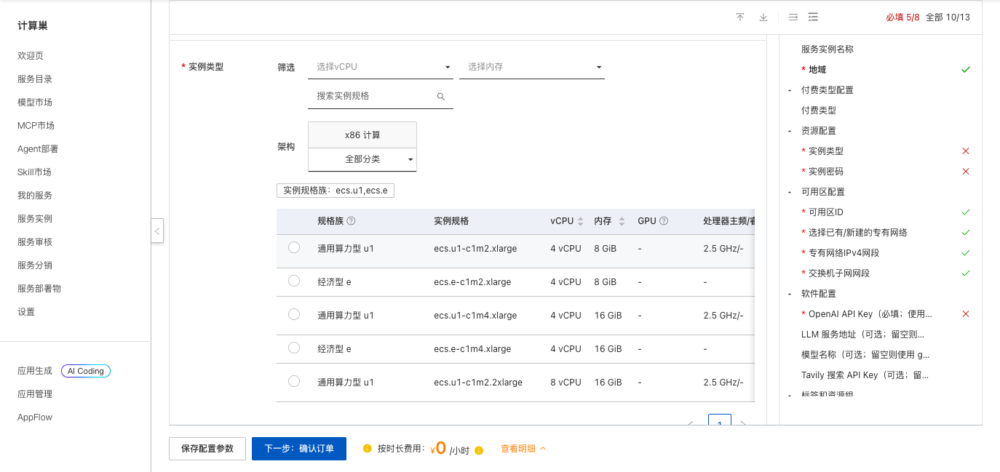
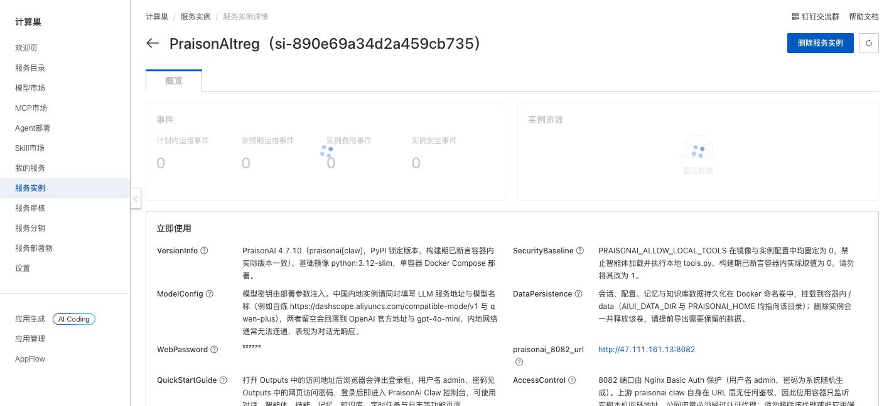
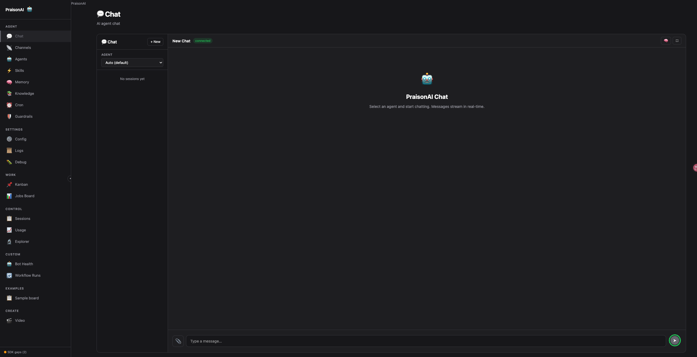

PraisonAI 是一个开源的多智能体编排框架，提供对话、智能体、技能、记忆、知识库、定时任务和日志等功能。本方案通过 Docker Compose 在一台云服务器 ECS 上部署 PraisonAI Claw 控制台，适合功能体验和开发测试。
访问 PraisonAI 部署链接，按页面提示填写部署参数。

主要参数如下：
| 参数 | 说明 |
|---|---|
| 服务实例名称 | 长度不超过 64 个字符，以英文字母开头 |
| 地域、可用区 | ECS 部署位置，建议选择离使用者较近的地域 |
| 付费类型 | 支持按量付费和包年包月，具体以页面为准 |
| 实例类型 | PraisonAI 所在 ECS 的规格 |
| 实例密码 | ECS 登录密码，请按页面密码复杂度要求填写 |
| OpenAI API Key | OpenAI 兼容接口的访问密钥 |
| LLM 服务地址 | OpenAI 兼容接口地址；使用百炼时可填写 https://dashscope.aliyuncs.com/compatible-mode/v1 |
| LLM 模型名称 | 接口支持的模型名；使用百炼时可填写 qwen-plus |
| Tavily API Key | 可选，启用相关联网搜索能力时填写 |
参数填写完成后，单击 下一步：确认订单。确认资源和费用，阅读并同意服务协议，然后单击 立即创建。
提交成功后进入服务实例列表。待实例状态变为 已部署，打开实例详情。通常需要等待数分钟。

在实例详情页的 立即使用 区域获取 PraisonAI 地址和网页访问密码。打开地址后，在浏览器认证窗口中输入用户名 admin 和对应密码，即可进入 PraisonAI Dashboard。

进入 Dashboard 后，可使用以下功能：
如果对话没有响应，请先确认 API Key、LLM 服务地址和模型名称相互匹配，并检查所选模型是否已开通。
不再使用时，在计算巢控制台删除服务实例，并确认关联的 ROS 栈、ECS、VPC 等资源均已释放，避免继续产生费用。